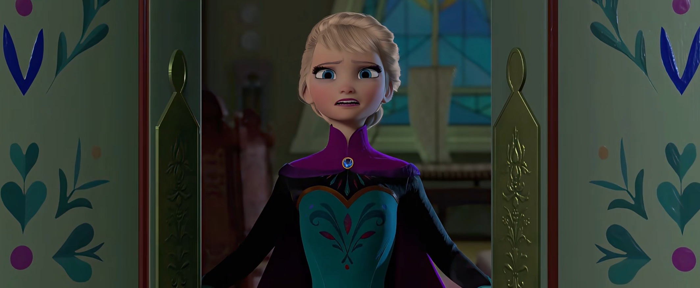
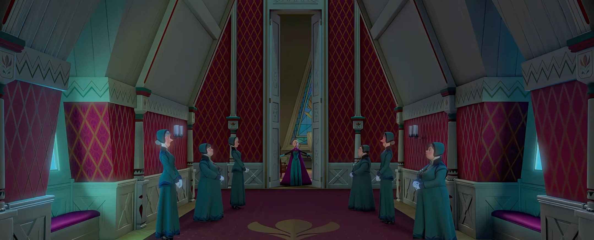
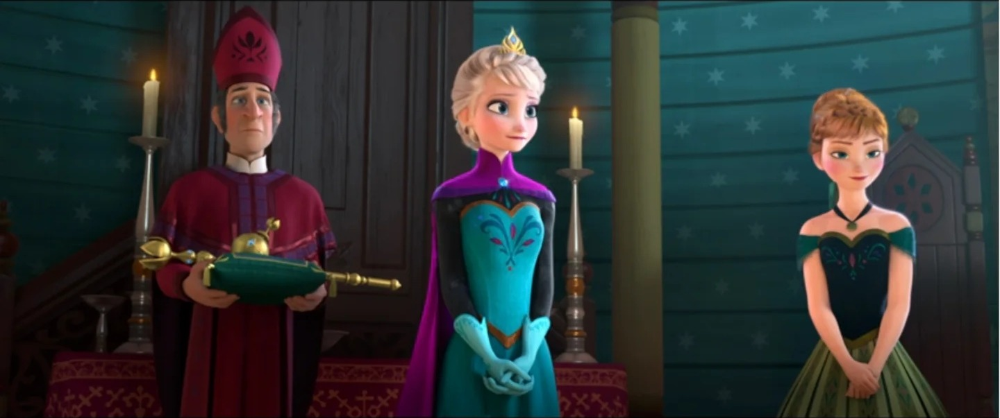
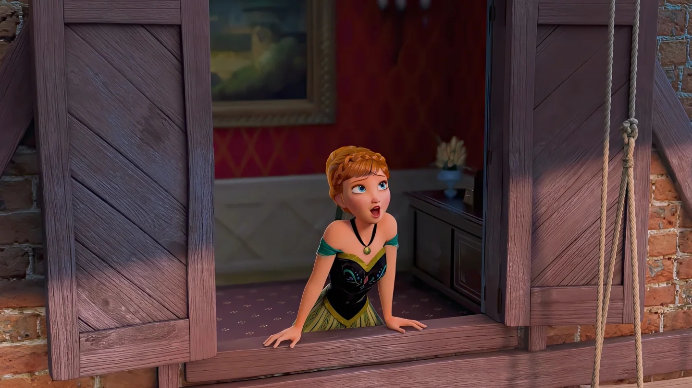
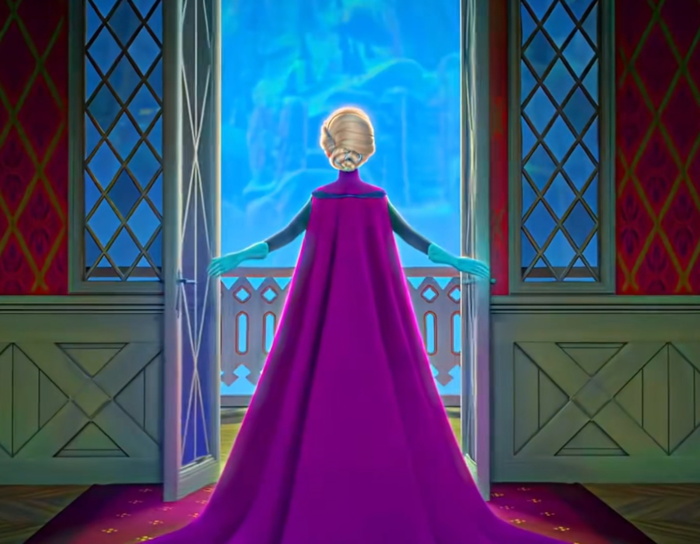

🎵 歌曲 · F1 歌曲
For the First Time in Forever
F1 歌曲
安娜与艾莎对唱 · 时长 3:45
📖 For the First Time in Forever
安娜与艾莎对唱 · 时长 3:45
一、歌曲基本信息
演唱者
Kristen Bell & Idina Menzel（安娜 & 艾莎）
词曲作者
Kristen Anderson-Lopez & Robert Lopez
《For the First Time in Forever》是《冰雪奇缘 (Frozen, 2013)》中的经典歌曲，由Kristen Anderson-Lopez 与 Robert Lopez 创作。这首歌在电影中承担着重要的叙事功能，是角色情感表达和剧情推进的关键节点。（来源：迪士尼官方 / Frozen原声带）
二、完整歌词（中英对照 · 逐句交互 · 播放高亮）
🎵
For the First Time in Forever
Kristen Bell & Idina Menzel（安娜 & 艾莎）
▶
VERSE 1 · 主歌一 · 安娜
The window is open!
窗户开了！
💡 点击查看逐句考据
窗户打开了！安娜第一次亲眼看到城堡的门窗敞向等待着的街道与人群——宫门从紧锁到洞开，不只宣告舞会成真，更象征她眼中“正常而热闹的人生”终于触手可及。她的兴奋从设想变成实感。
💡 点击查看逐句考据
安娜宣告城堡大门敞开、迎接全城宾客。她上一句还沉浸在“太久没有过……”的期待里，这时却突然指向眼前真切的门——门一开，她幻想多年的热闹人生从想象落成现实，也是她与封闭童年挥手作别的一刻。
I didn't know they did that anymore!
我都不知道它们还能开！
💡 点击查看逐句考据
我不知道他们还会这样做，安娜的惊讶。城堡多年来一直封闭，她几乎忘记了门窗打开是什么样子。对她来说，这是一个新奇的景象——她已经习惯了封闭的生活。
Who knew we owned eight thousand salad plates...?
谁知道我们有八千个沙拉盘……？
💡 点击查看逐句考据
八千只沙拉盘——安娜被自家殷实却从未启用的家底惊到。这堆仓库里的家当，映衬出她与艾莎多年来隔绝在城堡里的寂寥；一句俏皮的自嘲，点破“外表繁华、内里冷清”的落差。
For years, I've roamed these empty halls
多年来我在这空荡的大厅徘徊
💡 点击查看逐句考据
多年来我在这些空荡的大厅里游荡，安娜回忆多年来的孤独生活。城堡很大，但她只能一个人游荡，没有人和她分享——这些华丽的大厅，对她来说只是孤独的背景。
Why have a ballroom with no balls?
为什么有舞厅却没有舞会？
💡 点击查看逐句考据
为什么要有一个从不举办舞会的舞厅？安娜的疑问，既有趣又让人心酸。城堡里有华丽的舞厅，但多年来从未举办过任何活动——就像她自己，有社交的渴望，却从未有机会实现。
PRE-CHORUS · 预副歌 · 安娜
Finally, they're opening up the gates!
终于他们要打开城门了！
💡 点击查看逐句考据
终于他们打开了大门，加冕礼当天，城堡大门向公众开放。这是多年来的第一次，安娜感到兴奋和期待——大门的打开，意味着她终于有机会见到外面的世界，交到朋友。
There'll be actual, real, live people
会有真实的活人
💡 点击查看逐句考据
将会有真实的、活生生的人，安娜期待见到陌生人。多年来她几乎没有和外人接触，对她来说，见到陌生人是一件新鲜事——她渴望真实的人际互动，而不是和画像说话。
It'll be totally strange
那一定很奇妙
💡 点击查看逐句考据
这会非常奇怪，安娜既兴奋又紧张。她已经习惯了孤独，突然要面对这么多人，让她感到不适应——但这种陌生感，正是她渴望的变化。
But wow! Am I so ready for this change!
哇！我太期待这改变了！
💡 点击查看逐句考据
但是哇，我太准备好迎接这个变化了！安娜的兴奋压倒了紧张。她渴望改变，渴望走出孤独的生活——这个加冕礼，对她来说不仅是仪式，更是新生活的开始。
CHORUS 1 · 副歌 · 安娜
'Cause for the first time in forever
因为这是多年来的第一次
💡 点击查看逐句考据
正因为这是这么久以来的第一次（王宫之外），安娜第一遍点出主题——她反复排练、期待已久的舞会终于要成真，兴奋几乎让她坐不住。唱到“forever”时她在楼梯口破门而出，如自己所期盼的那样，精彩的时光终于要开启。
There'll be music, there'll be light!
会有音乐，会有灯光！
💡 点击查看逐句考据
将会有音乐，将会有灯光，安娜想象加冕礼的盛况。音乐和灯光象征着欢乐和希望，与多年来的黑暗和沉默形成对比——她的人生，终于要有音乐和灯光了。
For the first time in forever
多年来的第一次
💡 点击查看逐句考据
这么久以来的第一次，主题句首次由合唱托起。安娜看到大门敞开、人群涌入时惊呼出声——那一刻她以为自己终于被世界接纳，悲剧性的反讽也从此埋下。相同的“第一次”，在她眼里是希望的入口。
I'll be dancing through the night...
我要彻夜起舞……
💡 点击查看逐句考据
我将整夜跳舞，安娜期待在加冕舞会上跳舞。跳舞象征着欢乐和自由，是她多年来梦寐以求的事情——她想象自己在舞池中旋转，与陌生人共舞。
Don't know if I'm elated or gassy
不知我是兴奋还是胀气
💡 点击查看逐句考据
不知道我是兴奋还是胀气，安娜的幽默自嘲。她太兴奋了，以至于身体都有了反应，这显示了她的天真和可爱——她不是一个完美的淑女，而是一个真实的女孩。
But I'm somewhere in that zone!
反正我在这两者之间！
💡 点击查看逐句考据
但我大概处于那种状态，安娜继续自嘲。她无法准确描述自己的感受，但知道自己处于一种极度兴奋的状态——这种感觉，对她来说是全新的。
'Cause for the first time in forever
因为这是多年来的第一次
💡 点击查看逐句考据
正因为这是这么久以来的第一次，主题句再次响起，地点已从城堡移到通往宫外的路上。安娜的期待从“想”变成“做”，她真的在朝那个曾以为永远不属于自己的生活奔去，旋律也随之更轻快。
💡 点击查看逐句考据
我将不再孤独，安娜最渴望的不是舞会或音乐，而是不再孤独。多年来她一直一个人，此刻她终于有机会交到朋友——这是她最深刻的渴望。
SPOKEN · 念白 · 安娜
I can't wait to meet everyone!
我等不及要见大家！
💡 点击查看逐句考据
我迫不及待想见每一个人！安娜的社交渴望。她想见到来自各国的贵宾，想和他们交流，想交到朋友——这种渴望，来自多年的孤独。
What if I meet THE ONE?
万一我遇到命中注定的人呢？
💡 点击查看逐句考据
如果我遇到了……那个他？安娜开始幻想爱情。她期待在加冕礼上遇到自己的真命天子，这是少女对爱情的浪漫幻想——她不仅想要朋友，还想要爱情。
VERSE 2 · 主歌二 · 安娜
Tonight, imagine me, gown and all
今晚，想象我穿上礼服
💡 点击查看逐句考据
今夜，想象我穿着礼服的样子，安娜想象自己穿上华丽礼服的样子。她已经很久没有打扮过了，对她来说，穿礼服是一件新鲜事——她想象自己优雅地出现在舞会上。
Fetchingly draped against the wall
迷人地倚在墙边
💡 点击查看逐句考据
迷人地靠在墙上，安娜想象自己在舞会上的优雅姿态。她试图想象自己是一个迷人的淑女，但她的天真让这种想象显得可爱——她不是天生的淑女，而是在努力扮演。
The picture of sophisticated grace...
优雅得体的化身……
💡 点击查看逐句考据
优雅成熟的典范，安娜用正式的词汇描述自己，显示她对淑女形象的向往。但实际上她是一个天真活泼的女孩，这种反差很有趣——她想成为优雅的淑女，但本性却是活泼的女孩。
I suddenly see him standing there
我突然看见他站在那里
💡 点击查看逐句考据
我突然看到他站在那里，安娜幻想遇到白马王子的场景。她的浪漫幻想开始具体化，想象一个英俊的王子出现在她面前——这是每个少女都有过的幻想。
A beautiful stranger, tall and fair
一位美丽的高个子陌生人
💡 点击查看逐句考据
一个美丽的陌生人，高大而英俊，安娜对理想男性的描述。这是典型的少女幻想——高大、英俊、陌生的王子，他的出现将改变她的人生。
I wanna stuff some chocolate in my face!
我想往嘴里塞满巧克力！
💡 点击查看逐句考据
我想把巧克力塞进嘴里！安娜的幻想突然从浪漫转向食物，显示她的天真和真实。她不是一个完美的淑女，而是一个爱吃巧克力的普通女孩——这个细节，让她的角色更加真实可爱。
But then we laugh and talk all evening
然后我们会整晚谈笑
💡 点击查看逐句考据
但然后我们整晚笑和聊天，安娜回到浪漫幻想，想象和王子共度良宵。聊天和笑声是她渴望的亲密关系——她不仅想要爱情，还想要一个能聊天、能一起笑的伴侣。
Which is totally bizarre
那简直太离奇了
💡 点击查看逐句考据
这非常奇怪，安娜意识到自己的幻想有些不切实际。她从未和陌生人聊过天，所以对她来说，整晚和陌生人聊天是一件奇怪的事——但正是这种奇怪，让她更加向往。
Nothing like the life I've led so far!
和我以往的生活完全不同！
💡 点击查看逐句考据
和我迄今为止的生活完全不同，安娜的幻想与她的现实生活形成强烈对比。她的生活一直是孤独和封闭的，而幻想是社交和浪漫的——这种对比，让她的渴望更加深刻。
CHORUS 2 · 副歌 · 安娜
For the first time in forever
多年来的第一次
💡 点击查看逐句考据
这么久以来的第一次，第二次完整呼出。她转着圈向街市与人群诉说，这一刻的安娜天真地相信噩梦已结束——可艾莎那边的恐惧正在同步滋长，她浑然不觉，为后面的高潮蓄满落差。
There'll be magic, there'll be fun!
会有魔法，会有欢乐！
💡 点击查看逐句考据
将会有魔法，将会有乐趣，安娜期待加冕礼的神奇和欢乐。她不知道的是，魔法这个词在当晚真的会成真——艾莎的魔法会暴露，改变所有人的命运。
For the first time in forever
多年来的第一次
💡 点击查看逐句考据
这么久以来的第一次，第三次点题，合唱加入激荡共鸣。站在人群中起舞的安娜如鱼得水，越热闹越是她的主场；她把这“第一次”当作一生求而不得的正常生活的复归。
I could be noticed by someone...
也许有人会注意到我……
💡 点击查看逐句考据
我可能会被某个人注意到，安娜渴望被关注。多年来她一直是隐形的，此刻她希望有人能注意到她，特别是她幻想中的王子——被看见，是她最基本的渴望。
And I know it is totally crazy
我知道这很疯狂
💡 点击查看逐句考据
安娜自认“开派对、请全城”这主意实在离谱，却仍要任性一把。越是自知疯狂，越显出这是她挣脱多年拘束后的第一次放纵——她要把压抑的热情，在今晚一口气释放。
To dream I'd find romance…
梦想我会找到浪漫……
💡 点击查看逐句考据
梦想我会找到浪漫，安娜承认自己在幻想爱情。这是少女的正常幻想，但对她来说，这种幻想更加强烈，因为她多年来一直孤独——爱情，是她对亲密关系的最深渴望。
But for the first time in forever
但因为是多年来的第一次
💡 点击查看逐句考据
但这么久以来第一次，最后一次重复核心句。安娜的人生即将迎来全新的开始，无论幻想是否成真，变化已经到来——她即将走出孤独，迎接新世界。
At least I've got a chance!
至少我有机会！
💡 点击查看逐句考据
至少我有了一个机会！安娜的乐观和希望。即使幻想不一定成真，她至少有了机会——机会去社交、去交朋友、去体验生活。这个机会，对她来说已经足够珍贵。
ELSA SOLO · 艾莎独唱
💡 点击查看逐句考据
“别让他们进来”——艾莎对自己的警告。这是她被父母植入的生存法则：不能让任何人靠近，以免那不受控的力量伤及他人。这句同时点出全曲的核心矛盾——她越想保护别人，就越要把所有人挡在门外。
Don't let them see
别让他们看见
💡 点击查看逐句考据
“别让他们看见”——艾莎对自己说的第二句。它与前一句构成完整的自警：别让人进来、也别让人看见。她的恐惧不只是怕伤人，更是怕自己的真实面目被识破。
💡 点击查看逐句考据
“做个好女孩”——加冕礼就在今天，艾莎必须扮演那个所有人期待的完美女王。“好女孩”是她十几年自我囚禁的产物：外界越要求她完美，她就越不敢承认真实的自己。
You always have to be
你必须一直这样
💡 点击查看逐句考据
“你必须一直做那样的人”——前半句的余音未消，后半句已跟上。这句自我规训是全曲的题眼：艾莎把“必须”当成活下去的条件，于是她所有的恐惧都指向同一件事——一旦偏离，她就不再被允许存在。
💡 点击查看逐句考据
“隐藏”——这句是《Conceal, Don't Feel》那首独立插曲的核心，也是艾莎此刻唯一能抓住的救命绳。它把一整套复杂的恐惧压缩成一个单词：只要不被看见，就不会有人发现她有多害怕。
💡 点击查看逐句考据
“别去感受”——她给自己的第二道锁。前一句藏的是外表，这一句藏的是内心。冰霜其实不是她的魔法，而是这份“不许感受”的具象化：越是要强压情感，冰雪就越往外长。
💡 点击查看逐句考据
“演一场戏”——加冕礼就是她今晚必须演出的戏。台下的观众、掌权的宾客，都等着看那个从容的女王；只有她自己知道，剧本每写错一个字，戏就会塌。
💡 点击查看逐句考据
“只要走错一步”——她把整场加冕礼想象成一次走钢丝。冰必须在烛台上、在地毯上、在身体里完美流动；任何一个失控的瞬间，都会让十几年的隐瞒当场崩塌。
And everyone will know
所有人都会知道
💡 点击查看逐句考据
📝 逐句考据
“所有人都会知道”——这是艾莎最深的恐惧，也是她此刻真正害怕的东西：不是受伤，不是失败，而是被 发现
。所以她宁可放弃爱、放弃自由，也不肯让任何人看见真实的自己。
DUET · 姐妹对唱
But it's only for today
但只有今天
💡 点击查看逐句考据
但只有今天，艾莎安慰自己。加冕礼只有一天，只要熬过这一天，她就可以回到封闭的生活——她用这个信念来支撑自己，度过这最艰难的一天。
It's only for today!
只有今天！
💡 点击查看逐句考据
只有今天！姐妹俩合唱，安娜的兴奋和艾莎的恐惧在这一刻达到顶点。加冕礼即将开始，两人的命运即将交汇——一个在期待新生活，一个在恐惧旧生活的结束。
It's agony to wait
等待是痛苦的
💡 点击查看逐句考据
等待是一种折磨，艾莎的痛苦。她在等待加冕礼的开始，这种等待让她感到无法忍受——但她不知道，真正的痛苦，还在后面。
It's agony to wait!
等待是痛苦的！
💡 点击查看逐句考据
“等待是折磨！”——两人的声部再次碰撞：艾莎的焦灼与安娜的欢快叠在同一句上。此刻她们一个在门内、一个在门外，却还在同唱——这正是“平行而错位”最动人的一刻，也预示着几个小时后姐妹之间将爆发真正的冲突。
Tell the guards to open up the gate!
告诉卫兵打开城门！
💡 点击查看逐句考据
“快让守卫打开城门！”——这句在片中反复出现：安娜想快点出门，而艾莎恰恰希望时间永远停在这里，能拖一刻是一刻。同一个“城门”，对安娜是通往世界的入口，对艾莎是她必须走出去的刑场。
💡 点击查看逐句考据
大门！艾莎终于说出大门。城堡大门打开，象征着她多年来的封闭生活即将结束——尽管这不是她想要的，但变化已经到来，她必须面对。
COUNTERPOINT · 对位交替 · 一句接一句
For the first time in forever
多年来的第一次
💡 点击查看逐句考据
这么久以来的第一次，第四次复唱，全场合唱推至顶点。她已被簇拥着步入舞池——这个她幻想了一辈子的场景，此刻愈是璀璨，愈衬托稍后真相揭露时跌得愈重。
Don't let them in, don't let them see
别让他们进来，别让他们看见
💡 点击查看逐句考据
别让他们进来，别让他们看见，艾莎最后的提醒。她不知道的是，她的恐惧很快就会成真——魔法终将暴露，所有人都会知道。
I'm getting what I'm dreaming of!
我要得到我梦想的一切！
💡 点击查看逐句考据
在所有焦虑的自我告诫之后，安娜话锋一转回到此刻的高光：宴会成真、爱情可能降临，她觉得自己正要去抓梦寐以求的一切。这份雀跃越真实，与背后那道始终未解开的门所形成的反差就越揪心。
Be the good girl you always have to be
做个你必须一直做好的女孩
💡 点击查看逐句考据
做个你必须一直做好的女孩，艾莎提醒自己要做个好女孩。多年来的规训在这一刻达到顶点，她必须在加冕礼上完美地控制自己——不能有任何失误，不能让任何人看到真实的她。
A chance to change my lonely world
改变我孤独世界的机会
💡 点击查看逐句考据
安娜把对爱情的想象，说成“改变我孤独世界的机会”：她以为一位“王子”的出现，就能终结从小到大只有自己一个人的房间。她把救赎寄望于旁人——这份单纯既动人，也将让她在即将到来的真相里跌出深刻的成长。
💡 点击查看逐句考据
第二次出现的“隐藏”，是艾莎在舞会中段给自己的最后一次提醒。这个词从童年一路跟到此刻，已经内化成她的呼吸节奏——她甚至不需要唱出它，身体就先绷紧了。
A chance to find true love!
找到真爱的机会！
💡 点击查看逐句考据
“找到真爱的机会！”——急切、笃定、近乎盛大的宣言。安娜把舞会中尚未谋面的陌生人，提前祭上“真爱”的宝座；她不是在等待爱，而是暗自决定了爱会发生。这种先相信、后证实的惯性，正是她日后为以貌取人付出代价的起点。
Conceal, don't feel
隐藏，别感受
💡 点击查看逐句考据
“隐藏，别感受”——艾莎的整条生存法则被压缩进这两个词里。她一边在人前端庄微笑，一边在句尾对自己复诵禁令。这道心墙要到冰宫、到那支被困在胸口的冰锥，才会被真正凿开。
Don't let them know
别让他们知道
💡 点击查看逐句考据
“别让他们知道”——整句唱完，艾莎把全部秘密重新锁好。她不知道的是，就在这首曲子的尾声过后几个小时，她的冰会在全城宾客面前失控——那道锁终究没能锁住。
OUTRO · 收尾 · 安娜
I know it all ends tomorrow
我知道明天一切就会结束
💡 点击查看逐句考据
盛大的夜晚会随着黎明散场——安娜其实清楚，这场狂欢只是暂时的调剂，明天一到一切又将回到原点。她故意不去想明天，只求今天尽兴；这份“明知会结束仍要抓住”的倔强，是她灰暗日常里唯一的光。
So it has to be today!
所以必须是今天！
💡 点击查看逐句考据
“所以必须是今天！”——既然明天终将结束，那所有热情与冒险都必须赶在今晚兑现。安娜把积压多年的渴望押在这一夜，语气决绝得像一场自我救赎；它把整首歌的期待推向顶点，也把即将降临的“惊喜”推到了悬崖边。
'Cause for the first time in forever...
因为这是多年来的第一次……
💡 点击查看逐句考据
“因为这是这么多年来第一次”——全曲最后一次呼出这句主题。安娜已经站在舞池中央，她真的得到了梦寐以求的一切：音乐、人群、还有那个“高个子的陌生人”。正因如此，这句“forever”才格外沉重——她不知道“永远”这个词今晚即将应验，也不知道姐姐此刻正独自困在房间里，与冰块较劲。
For the first time in forever
多年来的第一次
💡 点击查看逐句考据
这么久以来的第一次，全曲最后的点题。安娜合着众人之声放声歌唱，把全部幸福押在这一夜；而镜头同时切向楼上艾莎皱缩的手与紧锁的眉，两姐妹第一次“同框不同心”。
Nothing's in my way!
没有什么能阻挡我！
💡 点击查看逐句考据
没有什么能阻挡我！安娜的乐观和自信。她觉得自己终于可以自由地生活，没有什么能阻挡她——但她不知道，姐姐的魔法，将成为她最大的障碍。
三、关键歌词逐句考据
1
“The window is open!”
窗户开了！
窗户打开了！安娜第一次亲眼看到城堡的门窗敞向等待着的街道与人群——宫门从紧锁到洞开，不只宣告舞会成真，更象征她眼中“正常而热闹的人生”终于触手可及。她的兴奋从设想变成实感。
2
“Finally, they're opening up the gates!”
终于他们要打开城门了！
终于他们打开了大门，加冕礼当天，城堡大门向公众开放。这是多年来的第一次，安娜感到兴奋和期待——大门的打开，意味着她终于有机会见到外面的世界，交到朋友。
3
“There'll be music, there'll be light!”
会有音乐，会有灯光！
将会有音乐，将会有灯光，安娜想象加冕礼的盛况。音乐和灯光象征着欢乐和希望，与多年来的黑暗和沉默形成对比——她的人生，终于要有音乐和灯光了。
4
“For the first time in forever”
多年来的第一次
这么久以来的第一次，主题句首次由合唱托起。安娜看到大门敞开、人群涌入时惊呼出声——那一刻她以为自己终于被世界接纳，悲剧性的反讽也从此埋下。相同的“第一次”，在她眼里是希望的入口。
5
“I'll be dancing through the night...”
我要彻夜起舞……
我将整夜跳舞，安娜期待在加冕舞会上跳舞。跳舞象征着欢乐和自由，是她多年来梦寐以求的事情——她想象自己在舞池中旋转，与陌生人共舞。
6
“But for the first time in forever”
但因为是多年来的第一次
但这么久以来第一次，最后一次重复核心句。安娜的人生即将迎来全新的开始，无论幻想是否成真，变化已经到来——她即将走出孤独，迎接新世界。
7
“'Cause for the first time in forever...”
因为这是多年来的第一次……
“因为这是这么多年来第一次”——全曲最后一次呼出这句主题。安娜已经站在舞池中央，她真的得到了梦寐以求的一切：音乐、人群、还有那个“高个子的陌生人”。正因如此，这句“forever”才格外沉重——她不知道“永远”这个词今晚即将应验，也不知道姐姐此刻正独自困在房间里，与冰块较劲。
8
“Nothing's in my way!”
没有什么能阻挡我！
没有什么能阻挡我！安娜的乐观和自信。她觉得自己终于可以自由地生活，没有什么能阻挡她——但她不知道，姐姐的魔法，将成为她最大的障碍。
四、歌曲定位与深度分析
🎯 歌曲定位
安娜与艾莎的“对唱 / I Want 歌曲”，出现在艾莎加冕日、城门终于开启的清晨。安娜的部分是充满期待与天真的“我渴望”之歌，艾莎的部分则是恐惧与克制的“我想隐藏”之歌，两条声线在同一时空交错。它既是开场情绪引擎，也确立了两位女主各自的核心欲望。[来源：grokipedia；wersuj 解析；Collider/Kristen Bell 访谈]
💡 内涵与主题

加冕前的忐忑 裙摆流光溢彩，心里却翻涌不安：艾莎深知力量一旦暴露的代价。歌里安娜的雀跃与艾莎这份隐忧，正是一体两面。

加冕日 · 列队 仪仗与侍女列队待命的加冕早晨——歌中所唱“盛装舞会、人群推门而入”正是从这一场张罗开始的预演。
加冕礼服 · 登场 封存多年的城堡在今天重新打开，艾莎也换上这套盛装走到阳光与众人面前——两个人都在为“今日”鼓起勇气。
主题是“隔离之后的 reconnect 渴望”与“恐惧支配下的自我压抑”的并置。安娜唱 “For the first time in forever… I won't be alone”，是对多年孤独的反弹；艾莎唱 “Conceal, don't feel… Don't let them know”，是创伤塑造出的生存准则。两位创作者想展示：童年创伤如何把两姐妹塑造成“同一枚硬币的两面”——对同一事件（开城），一人看见自由，一人看见危险。[来源：wersuj.pl 引 NPR/纽约时报访谈；grokipedia]
🎬 在电影中的作用

加冕典礼 姐妹一同步入典礼——一个即将揽下王冠，一个满心期待盛大之夜；《For the First Time in Forever》就响在这一刻之前。
舞会的初见 宴会厅里与汉斯旋转的安娜，以为“第一次”终于等来童话成真——这首歌的后半段，恰恰由这份误解串起。
对应加冕日这一关键剧情节点：安娜雀跃地跑下堤道闯入小镇，却在曲末撞上汉斯的马、跌进小船（与汉斯初遇）；与此同时艾莎在房中对着烛台练习加冕礼仪，唱出 “Don't let them in”。歌曲在高潮处被硬切中断，制造“即将失控”的悬念。其 reprises 版本 later 出现在艾莎冰宫：姐妹短暂重逢后冲突升级，艾莎失手将寒冰打入安娜心脏——首尾呼应《Frozen Heart》的“冰冻之心”预言。[来源：Wikipedia；kids.kiddle；grokipedia]
🌱 来源与创作灵感 沿用百老汇传统的“I Want”歌曲结构（创作者 Lopez 夫妇以《Q 大道》《摩门经》等音乐剧闻名，把严格的音乐剧纪律带进动画）。灵感直接来自两位女主“一开一合”的戏剧反差：把两个截然相反的内心世界放进同一时间点、同一段旋律里对位呈现。[来源：Eathealthy365 soundtrack 解析；wersuj.pl]
🛠️ 制作过程 词曲：Kristen Anderson-Lopez & Robert Lopez；制作含 Christophe Beck 的管弦编配。本曲创作得很晚——2013 年 6 月才写成，距 11 月上映仅五个月，彼时主创正为“影片还不成形”而赶工。初版有一句 “I hope that I don't vomit in his face”（迪士尼因“体液”指涉否决），最终由 Lopez 夫妇的女儿 Katie 在牙医诊所里想出的替代句 “I wanna stuff some chocolate in my face” 保留进正片。Reprises 原本另有构思：一份叫《Life's Too Short》的对峙歌（后因艾莎从“反派”改为“悲剧英雄”显得过于刻薄而被弃），其部分旋律后来被 reuse 到《Frozen Fever》的《Making Today A Perfect Day》；Anderson-Lopez 在意识到需要 reprises 后，仅用约 20 分钟便写出 reprises 版并独立 pitch 给迪士尼团队。[来源：Wikipedia；kids.kiddle；grokipedia]
🔍 解析与评价
最精彩的是“对位法”（counterpoint）：姐妹各唱各的词、共享同一旋律，听觉上就呈现了“同处一堡、却活在两个情感世界”的距离感。
安娜（Kristen Bell） 艾莎（Idina Menzel） 核心欲望 连接、自由、也许还有爱 隐藏、控制、平安度过这一天 音乐性格 明快、升调、外放 克制、焦虑、内敛 同一事件 开城 = 解放 开城 = 风险
调性随段落每升半音（F 大调起、到 G 大调收），用音高爬升外化安娜愈发昂扬的期待。 表演上，Kristen Bell 以明快顽皮的语调赋予安娜“现代、有点怪、说话比思考快”的鲜活感；Idina Menzel 则以克制内敛的音色托出艾莎底色里的焦虑。该曲曾登上 Billboard Hot 100 第 57 名，是《冰雪奇缘》现象级传播的一环。[来源：grokipedia；wersuj.pl；kids.kiddle]
🌍 文化影响与获奖

大开的城堡门 城堡大门敞向街道与人群，安娜隔窗看到世界涌来——她期待多年的热闹人生终于近在咫尺。

打开的门 宫门洞开，把封闭的童年远远关在身后；对安娜而言，这正是“第一次”与久违的世界重逢。
随《冰雪奇缘》原声带（2013-11-25 Walt Disney Records）全球爆红：原声带曾 13 次（非连续）登顶 Billboard 200，全球销量以千万计；《Let It Go》为 Lopez 夫妇赢得奥斯卡最佳原创歌曲奖，本曲与整张专辑共同成为文化现象。它亦被译为多国语言（如日语版《生まれてはじめて》下载超 25 万次），并被改编进 2018 年百老汇音乐剧与迪士尼乐园“Sing-Along Celebration”驻演项目。[来源：grokipedia；kids.kiddle]
五、两个“第一次”、半音的抬升与一首被否决的 reprised
（一）官方设定与创作方的公开表述：它是在影片最狼狈的时候写出来的
这首歌的制作史本身就是全片开发史的一个缩影。据 Wikipedia 条目引述的各方说法，这首歌 写得很晚——2013 年 6 月，距 11 月 27 日上映只剩五个月；而制作团队 从 2 月起就一直对影片当时的状态不满意
，整个后期都在赶着把片子救回来（来源：Wikipedia《For the First Time in Forever》条目 Production 节，引 NPR Fresh Air 访谈、洛杉矶时报报道等）。
也就是说， 这不是一部从容写歌的片子
——它是在“已经出问题了”的压力下写的。Kristen 在 NPR 的访谈里用的说法是“Songwriters Behind 'Frozen' Let Go Of The Princess Mythology”（词曲作者们放下了公主神话）。
一个流传很广的细节也被 Wikipedia 记录了：原版里有一句 “I hope that I don't vomit in his face”（希望我不会把东西吐在她脸上）， 被迪士尼以“涉及体液”为由否掉；最后采用的是 Lopez 夫妇的女儿 Katie 现场想出来的一句 “I wanna stuff some chocolate in my face”（来源：Wikipedia 同节，引 Vulture 2014-01-15）。这个细节值得记下，因为它同时说明两件事： 一，这首歌的幽默是刻意保留的； 二，它是在现场被一句童言改写的
。
（二）结构：一首歌里的两条曲线，和一首被否决的 reprised
这首曲子的核心手法是 两条同时运行的旋律： 艾莎以庄严、惊惧的对位旋律唱着她的恐惧，安娜以明亮的歌唱着她的期待。而且这个动态在片中 被复用了一次
——在安娜追到冰宫质问艾莎时，两姐妹再次唱起这首歌，但此时含义已经完全翻转（来源：Wikipedia Synopsis 节）。
和声上有一个可核对的设计： 原版每升一段主歌就升半音， 从 F 大调开始，到最后的副歌落在 G 大调——整首歌在一个键上被抬高了半度。而 reprised 版本的对比更强： 安娜的部分在是大调，艾莎的对位在小调
，用来凸显两人此刻完全相反的情绪（来源：Wikipedia 同节 Musical / Reprise 节）。
reprised 还有一个极狠的编排细节： 在艾莎失手击中安娜胸口之后，打击乐部分混入了《Frozen Heart》的音乐
（来源：Wikipedia Reprise 节）。也就是说，这一击不是配了个音效，而是让第一部开场的凿冰工合唱曲在这里回来——观众不需要任何解释就明白发生了什么。
但 reprised 原本 不是这首歌。原计划是另一首叫 《Life's Too Short》 的对峙曲，前提是“人生太短，不该浪费在不理解你的人身上”；后来随着角色演变（ 艾莎从反派改写成悲情主角），那首歌被判定 “太过记仇”
而弃用，才改成现在这首 reprised 以形成动机呼应（来源：Wikipedia Production 节）。《Life's Too Short》作为 demo 留在豪华原声带里，其中一段旋律后来被复用在了《Frozen Fever》的《Making Today A Perfect Day》。
（三）官方发布与可靠网络资料：它作为“I want song”的原型地位
乐评界普遍把它视作迪士尼“I want song”这一曲式的一个样本。NeonTommy 的评价是： “一首经典的”I Want“歌（想想 Part of Your World 或 When Will My Life Begin），加了一点自嘲”，并说它“给一个熟悉的曲式加上了新的趣味”。StitchKingdom 则指出：它的作曲与歌词 “取材于安娜那种急躁、焦虑的能量与笨拙感，是把精致与荒唐混在一起的经典范例”
（来源：Wikipedia Critical reception 节引两家乐评原文）。
这种“精致与荒唐混在一起”的写法，正是它能撑住后半段的原因。因为这首曲子的双重任务是 同时建立两个人物：一个急于冲出门的乐观者，和一个不敢开门的恐惧者。而当它在冰宫重唱时，同一段旋律 承载的已经完全是对立的意思
——安娜唱“我们一起下山，你不必害怕”，艾莎唱“别靠近我，我只想要你们安全”。
至于它与《Tangled》的关系，谱面上确实有迹可循：“for the first time in forever”与“at last I see the light”在句式与和声进行上接近，两首歌都被乐迷并置讨论（来源：逐句与和声对照 · Spotify/Genius 歌词对照与乐迷讨论）。不过两支曲子 在旋律线、节奏、配器、速度与情绪上均有明显差异
，属于同一时期同一团队的写法延续，而非直接引用。
这首歌真正的成就，是它 证明了一次“重复”可以完全改变含义 。第一次唱，安娜唱的是“第一次”——第一次参加宴会、第一次见到真人、第一次被爱；艾莎唱的是“第一次”却满是恐惧。同一段旋律，第二次唱，安娜唱的是“这次我不会放手”，艾莎唱的是“这次请离我远一点”。迪士尼用一首歌讲完了两姐妹十年关系的全部距离——而这正是第一部全片最锋利的那一刀。
📌 本页要点
本页核心要点：①🔊 完整歌词逐行可点，展开即见逐句考据；②🔍 三、关键歌词逐句考据挑出最关键的 9 句单列；③🎯💡🎬 四节分列歌曲定位、内涵与主题、影片作用、创作灵感、制作、评价与文化影响；④📖 五、两个“第一次”——2013 年 6 月的赶工写作、每段主歌升半音的调性设计、安娜被击中胸口时混入《Frozen Heart》的鼓点，以及被判定“太过记仇”而弃用的原版 reprised《Life's Too Short》。来源：电影正典、豪华原声带、词曲作者访谈与可靠乐评。